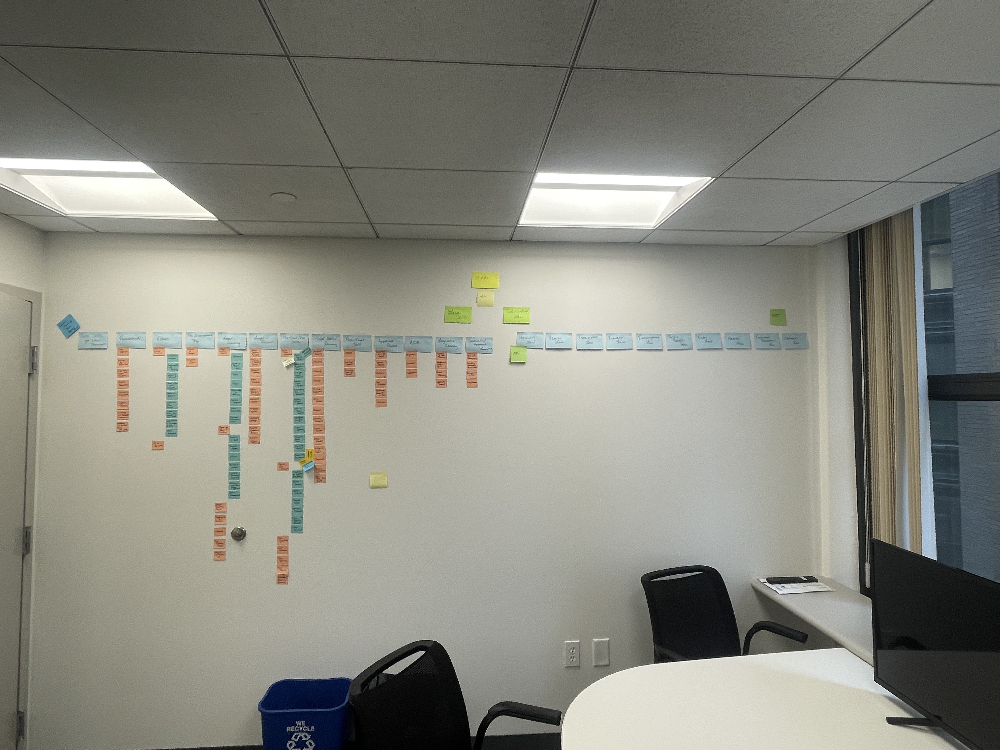
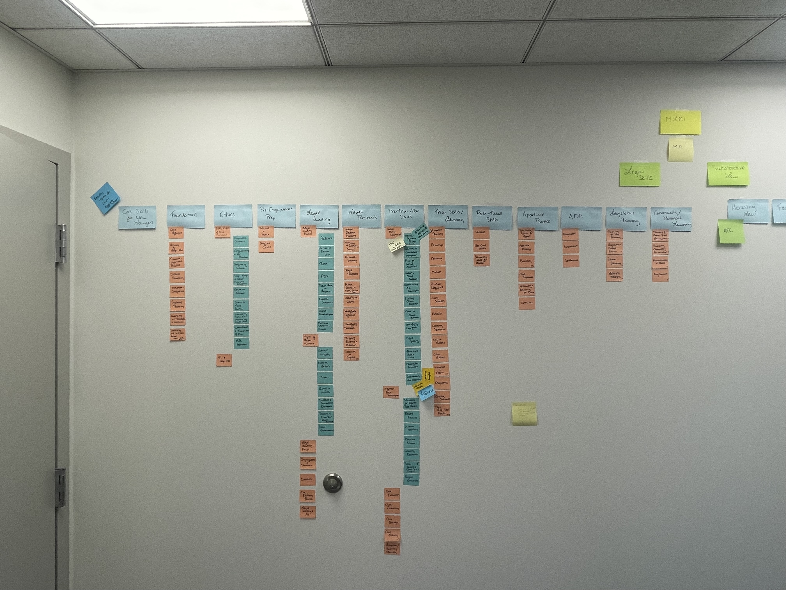
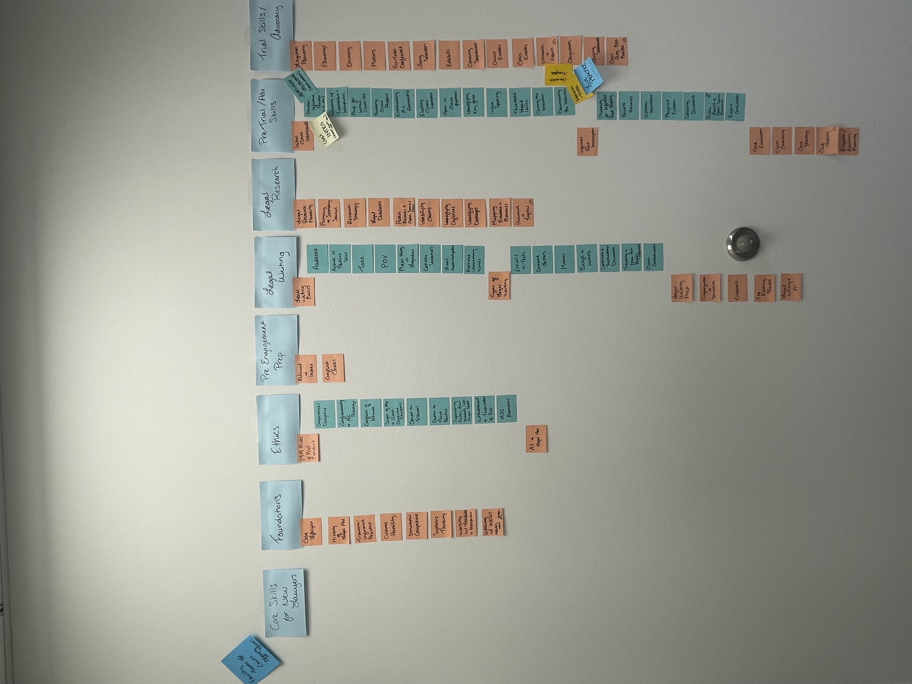
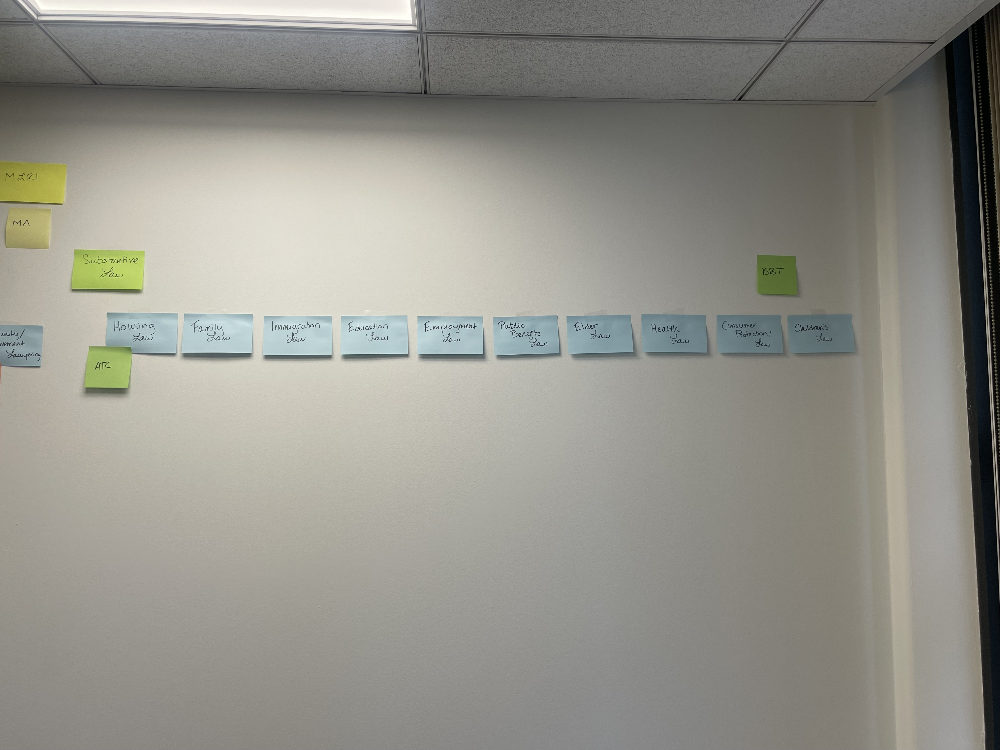
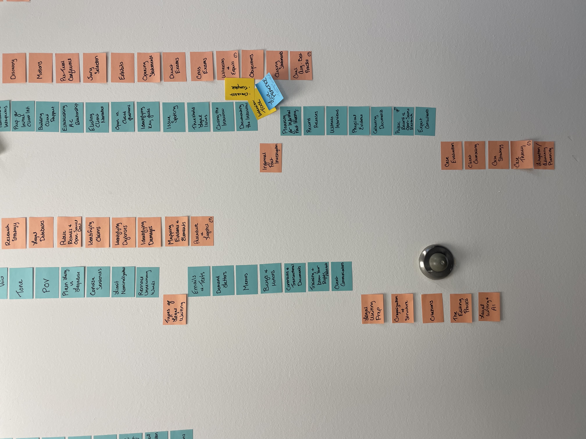
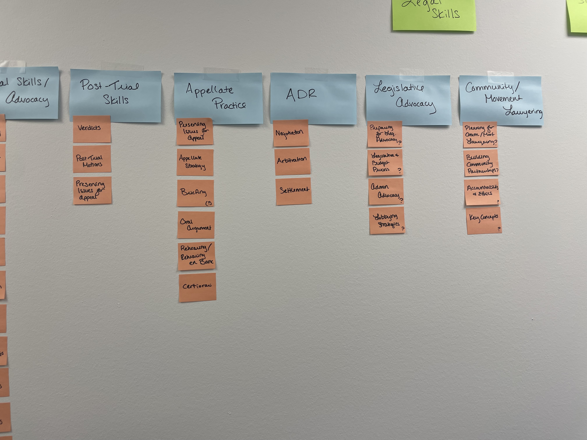

- Skill area
- Topic
- Sub-topic
- Flagged "?" on the wall
- Case Lifecycle
- History of Legal Aid
- Trauma-Informed Practice
- Cultural Humility
- Structural Competence
- Systems Thinking
- Working with Interpreters & Translators
- Working with Interdisciplinary Teams (ethics, strategy, etc.)
- MA Rules of Prof. Conduct
- Competence / Diligence
- Confidentiality & A-C Privilege
- Conflicts of Interest
- Scope of Rep & Client-Directed Decisions
- Candor to Tribunal
- Duties to Third Parties
- Supervising Paralegals, Law Students, Non-Legal Staff
- Withdrawal & Termination of Rep
- LSC Restrictions
- AI & Legal Aid
- Referral & Intake
- Conflict Checks
- Legal Writing Basics
- Audience
- Active vs Passive Voice
- Tone
- Point of View
- Plain Language vs Legalese
- Concise Sentences
- Limit Nominalizations
- Remove Unnecessary Words
- Types of Legal Writing
- Emails & Texts
- Demand Letters
- Memos
- Briefs & Motions
- Contracts & Transactional Documents
- Training & Know Your Rights Material
- Client Communications
- Legal Writing Prep
- Organization & Structure
- Clusters
- The Existing Process
- Legal Writing + AI
- Legal Research Planning
- Primary & Secondary Sources
- Research Strategy
- Legal Databases
- Public Records & Open-Source Docs
- Identifying Claims
- Identifying Defenses
- Identifying Damages
- Mapping Evidence & Elements
- Procedure & Logistics
- Initial Client Interviews unit intro
- Trauma-Informed Interviewing
- Working with Translators & Interpreters
- Prep for Initial Client Interview
- Building Client Rapport
- Establishing A-C Relationship
- Eliciting Client Narrative
- Open vs Closed Questions
- Identifying Key Facts
- Issue Spotting
- Threshold Legal Issues
- Closing the Interview
- Documenting the Interview
- Informal Fact Investigation
- Planning for Informal Fact Investigation
- Record Releases
- Witness Interviews
- Physical Evidence
- Public Records & Open-Source Research
- Expert Consultation
- Case Evaluation
- Client Counseling
- Case Strategy
- Case Theory
- Affirmative Litigation Planning
- Litigation Planning
- Pleadings
- Discovery
- Motions
- Pre-Trial Conference
- Jury Selection
- Exhibits
- Opening Statements
- Direct Exams
- Cross Exams
- Witnesses & Experts tentative
- Objections
- Closing Statements
- Oral Argument / Best Practice tentative
- Verdicts
- Post-Trial Motions
- Preserving Issues for Appeal
- Preserving Issues for Appeal
- Appellate Strategy
- Briefing tentative
- Oral Argument
- Rehearing / Rehearing en Banc
- Certiorari
- Negotiation
- Arbitration
- Settlement
- Preparing for Legislative Advocacy tentative
- Legislative & Budget Process tentative
- Administrative Advocacy tentative
- Lobbying Strategies tentative
- Planning for Community / Movement Lawyering tentative
- Building Community Partnerships tentative
- Accountability & Ethics tentative
- Key Concepts tentative
Housing Law
Family Law
Immigration Law
Education Law
Employment Law
Public Benefits Law
Elder Law
Health Law
Consumer Protection Law
Children's Law
Source photos: the original wall










Digitized from the team planning wall · 2026-06-30